Ben, 19 Nov: "if I was going to teach everything about the car and all the known algos related to building a self driving car." This page is that lesson. It goes top to bottom, from the sensors to the wheels. Each algorithm gets the same short card: the idea, how it works, a picture, good at, bad at, and where it is in our car.
Our own scores are not repeated here. They live in The stack, surveyed: each card below links to it.
The short version
A self-driving car does six jobs, many times a second: sense, localize, perceive, plan, control, and keep safe.
Localize = "where am I?" Blend wheels, IMU and GPS (the EKF), then match the lidar to a saved map (NDT, ICP, AMCL). SLAM makes that map.
Perceive = "what's around me?" Find the ground, group the rest into things, name them with a camera network (RF-DETR, YOLO), and follow them (Kalman, SORT).
Plan has three levels:
- route: which streets (Dijkstra, A*);
- path: a line the car can really drive (Hybrid-A*, the lattice, RRT);
- motion: the next few seconds (Pure Pursuit, MPC, MPPI, diffusion).
Behaviour = "what should I do now?" Keep going, slow, stop, wait, go: a state machine (ours), a behaviour tree (Nav2's), or traffic-rule modules (Apollo, Autoware). Ours caps the speed and puts stops in the road ahead; it never steers.
Control turns a speed and a curve into throttle, brake and steering (Ackermann, the bicycle model, PID).
Safety locks sit under everything and are never swapped out.
- We stay modular (one part per job) rather than end-to-end (one big network).
Every algorithm on one page
| Level | The question | Algorithms on this page |
|---|---|---|
| Sensors | what can I measure? | lidar, cameras, radar, GPS and RTK, IMU, wheel encoders |
| Localization | where am I? | dead reckoning, Kalman filter and EKF, ICP, NDT, AMCL, SLAM, KISS-ICP and KISS-SLAM, place recognition, learned MCL |
| Perception | what is around me? | ground removal, voxels, clustering, YOLO, DETR, Kalman tracking, SORT, lane finding, camera-lidar fusion |
| Maps | what do I remember? | occupancy grids, NDT maps, Lanelet2, costmaps, chunks, multi-drive merging |
| Route | which streets? | Dijkstra, A*, OpenStreetMap, Valhalla |
| Path | which line? | A* on a grid, Hybrid-A*, state lattice, RRT and RRT*, Dubins and Reeds-Shepp, smoothing |
| Motion | the next few seconds? | Pure Pursuit, Stanley, PID, MPC, MPPI, diffusion |
| Behaviour | what should I do now? | state machines, hierarchical state machines, behaviour trees, traffic-rule modules (Apollo, Autoware), speed round obstacles and hysteresis, gap acceptance and yielding, POMDPs and games, imitation and reinforcement learning, our behaviour planner |
| Control | how do I move the wheels? | Ackermann, bicycle model, transfer functions, feed-forward plus PID, braking with a load |
| Safety | what if it goes wrong? | watchdogs, e-stops, geofences, stop zones, simplex fallback |
| End-to-end | why not one network? | UniAD, world models, Tesla, Wayve |
The status words
Every "In our car" line uses the survey's words (how to read them):
| Word | Means |
|---|---|
| Default | runs in stack:=ours, the simulator's default |
| Car champion | what car.launch.py runs today, where it differs |
| In use | always runs (the EKFs, ego, the safety locks) |
| Challenger | built, scored beside the default; swaps in when it wins |
| Retired | no longer runs |
| Studied | read, not built |
1. The big picture
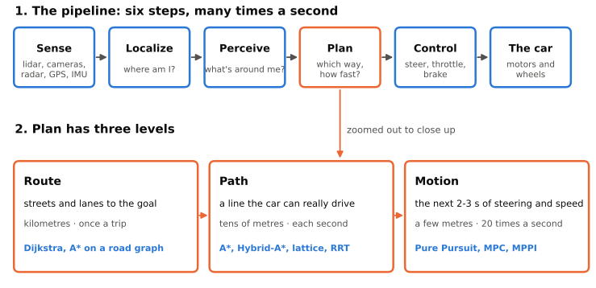
The pipeline
- Sense: the sensors measure the world and the car.
- Localize: work out where the car is, to centimetres.
- Perceive: find the road, the kerbs, the people and the cars.
- Plan: choose a way to the goal, then the next few seconds.
- Control: turn that plan into steering, throttle and brake.
- Safety watches all of it, and can stop the car at any step.
Planning's three levels
Ben, 14 Nov: "Zoomed out is routes, middle is how we get from cube to cube and finally close up is obstical avoidance".
| Level | Size | How often | Question | Example answer |
|---|---|---|---|---|
| Route | kilometres | once a trip | which streets? | "University Drive, then left at the library" |
| Path | tens of metres | about once a second | which line, round what's parked? | a smooth curve along the right lane |
| Motion | a few metres | 20 times a second | which steering and speed now? | "0.12 rad left, 1.4 m/s" |
How our nodes join up: How it fits.
2. Sensors: what the car can measure
No one sensor is enough: each fails in its own way, so the car carries several. Ours, with rates and topics: Learn: sensors.
| Sensor | Measures | Good at | Weakness |
|---|---|---|---|
| Lidar | a point cloud: thousands of 3D dots, by timing laser pulses | exact distances, day or night | rain, snow and dust; costly; sparse far away (our VLP-16 has 16 rings) |
| Cameras | pictures | colour: paint, signs, lights; cheap | no direct distance; glare, dark |
| Radar | points, and each point's speed (Doppler) | speed of other cars; works in rain and fog | few points; blurry shapes |
| GPS / GNSS | latitude and longitude from satellites | anywhere with sky; no map needed | 2-5 m alone; trees and buildings block it; it can drift slowly |
| RTK GPS | the same, corrected by a base station nearby | 1-2 cm when "fixed" | needs a corrections service; drops to float near buildings |
| IMU | turn rate (gyro) and acceleration | fast (hundreds a second); never blocked | drifts when integrated; bias |
| Wheel encoders | how far each wheel turned | smooth, exact over short distances | slip; a tyre's size changes; drifts over long ones |
More: Learn: lidar, Learn: GPS (fix types and RTK), How the car knows how fast it's going.
3. Localization: "where am I?"
Localization answers three things: where the car is, which way it faces, and
how fast it moves. Our frames follow REP-105: map → odom → base_link
(the frames).
| Kind | Example | Drifts? | Needs a map? |
|---|---|---|---|
| Counting motion | dead reckoning, KISS-ICP | yes, slowly | no |
| Pinned to the earth | GPS | no, but jumpy | no |
| Pinned to a map | NDT, ICP, AMCL | no | yes |
| Blending them | the EKF | no, if one input is pinned | no |
3.1 Dead reckoning (odometry)
The idea: count your steps. Add up how far the wheels turned and how much the IMU says you turned.
How it works
- Read the wheel speed: "1.0 m/s".
- Read the gyro: "turning 0.1 rad/s".
- Every tick, move the pose forward by speed × time, turned by turn rate × time.
- Repeat. Small errors add up.
| Good at | Bad at |
|---|---|
| smooth, never jumps | drifts: in Gazebo, wheels and gyro alone drifted to 1.2 m by a tour's end |
| works anywhere, no map, no sky | wheel slip, a wrong tyre size |
In our car: ekf_local (wheels + IMU), in use. More: Learn: localization.
3.2 The Kalman filter and the EKF
The idea: two unsure answers make one surer answer, if you weigh each by how sure it is.
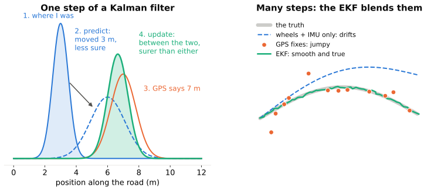
How it works
- Start with a guess and how unsure you are (a bell curve).
- Predict: move the guess by the wheels and IMU. The curve gets wider: less sure.
- Measure: a GPS fix arrives, with its own bell curve.
- Update: the new guess lies between the two, nearer the surer one. The curve gets narrower: surer than either alone.
- Repeat for every reading. The EKF (extended Kalman filter) does the same for a car that turns, by straightening the maths a little around the current guess.
| Good at | Bad at |
|---|---|
| any sensor with a stated uncertainty | only as true as its pinned input (the GPS) |
| carries on when one sensor stops | a slow drift in the GPS goes unnoticed |
| refuses readings far off (ours: 5 sigma) | wrong uncertainties give wrong blends |
In our car: two EKFs (robot_localization): ekf_local and ekf_global, in use.

Numbers: survey. A worked example in numbers: Learn: localization.
From: R. E. Kalman, 1960; T. Moore, D. Stouch, IAS-13, 2014 (robot_localization).
3.3 ICP: Iterative Closest Point
The idea: line up two point clouds by pairing each point with its nearest partner, moving to close the gaps, and repeating.
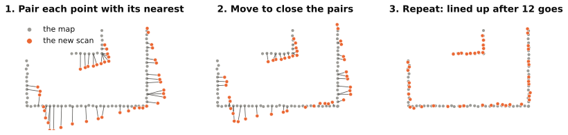
How it works
- Take the new scan (orange) and the map, or the last scan (grey).
- Pair each scan point with the nearest map point.
- Find the one slide and turn that closes the pairs best.
- Move the scan. The pairs get better.
- Repeat until it stops moving. The total slide = how the car moved.
| Good at | Bad at |
|---|---|
| exact when it starts close | starts far off: it locks onto the wrong wall |
| simple; no map needed (scan to scan) | slower as the map grows (every point kept) |
In our car: inside KISS-ICP (below), and to merge two drives' maps. More: Learn: localization.
From: P. J. Besl, N. D. McKay, "A Method for Registration of 3-D Shapes", IEEE T-PAMI, 1992.
3.4 NDT: the Normal Distributions Transform
Ben wrote "normilziation". The real name is Normal Distributions Transform: each cube of the map keeps a normal distribution (a bell curve, a "blob") of its points.
The idea: turn the map's point cloud into voxels (cubes), keep one blob per cube, then slide each new lidar scan until its points sit inside the blobs.
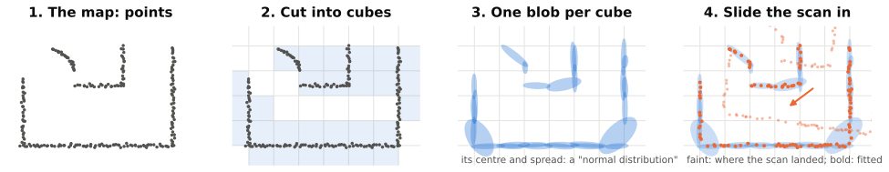
How it works
- Map once: drive the place and keep the lidar's points.
- Cut into cubes (voxels). Big cubes first, then smaller: big ones see far, small ones are precise.
- One blob per cube: keep only the points' centre and spread (an ellipse in 2D, an ellipsoid in 3D). The map gets small and smooth.
- A new scan arrives. The EKF's guess puts it slightly wrong.
- Slide and turn the scan until its points land where the blobs are thickest. Each step uses the blobs' slope, so it knows which way to move.
- The slide = the car's error. The match score says how good the fit is.
| Good at | Bad at |
|---|---|
| centimetres, with no RTK GPS | needs a map of every place it drives |
| GPS dropouts: it doesn't need the sky | it can find the wrong place: a confident match in the wrong spot (below) |
| fast, the same for any map size | places that change (parked cars, snow, building works) |
| its score says how good the match is | a scan that starts far off |
NDT's weakness: the right shape, the wrong place
Ben's point: NDT can be sure and wrong. If two places look alike to the lidar, a scan fits both equally well.
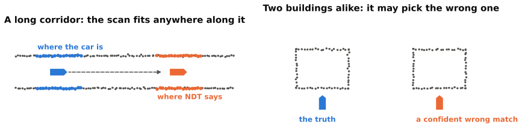
| Where | Why it slips | Our fix |
|---|---|---|
| a long corridor or a road between parallel walls | nothing tells "here" from "2 m on" | the GPS and the wheels check it; ours slipped 0.25-0.4 m along a lane (about 2 % of fits) |
| repeated buildings, rows of trees | two places look the same | start near the right place (GPS); place recognition (3.8) |
| a car parked where the map had none | the scan doesn't match the map | maps from several drives (5.6) |
In our car: aav_ndt (Rust). NDT into the EKF: challenger. NDT leads, the GPS
checks (TODO 210): challenger: it drove every GPS fault in Ravensim, 12 of 12 legs.
Numbers: survey,
what we decided.
From: P. Biber, W. Straßer, IROS 2003; M. Magnusson, PhD thesis, Örebro, 2009.
3.5 AMCL: Monte Carlo localization
"Monte Carlo" means: use many random guesses. AMCL is Adaptive Monte Carlo Localization.
The idea: scatter thousands of guesses of the car's pose (particles) over a 2D map, keep the ones that explain what the lidar sees, and let them gather on the truth.
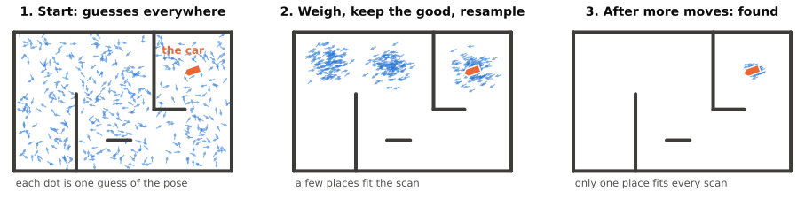
How it works
- Spread particles: each is one guess: "I'm at x, y, facing this way".
- Move them all with the wheels and IMU, plus a little random noise.
- Weigh them: for each particle, imagine the scan from its pose. Does it line up with the map's walls? Good fit = heavy, bad fit = light.
- Resample: draw a new set, picking heavy particles more often. Bad guesses die out; good ones get copied.
- Repeat. After a few moves, only the places that fit every scan survive.
- KLD sampling (the "adaptive" part): use many particles while lost, few once found.
| Good at | Bad at |
|---|---|
| finds the car from far off, even when lost ("kidnapped") | wide open spaces give it little to match |
| needs only a 2D map | tuning matters a lot: default settings lost the car (21 m worst) |
| holds several guesses at once | less exact than NDT |
In our car: aav_amcl_rs (our Rust port of Nav2's nav2_amcl), challenger
(amcl:=true): NDT's restart when it is lost. Tuned: 0.05-0.09 m a leg in Ravensim.
Numbers: survey.
From: D. Fox, W. Burgard, F. Dellaert, S. Thrun, AAAI 1999; D. Fox, IJRR 2003 (KLD); S. Thrun, W. Burgard, D. Fox, Probabilistic Robotics, 2005.
3.6 SLAM: making the map while you drive
SLAM = Simultaneous Localization And Mapping. NDT and AMCL need a map; SLAM makes it.
The idea: chain the scans together into a map, and when you come back somewhere you have been, use that to pull out the drift.
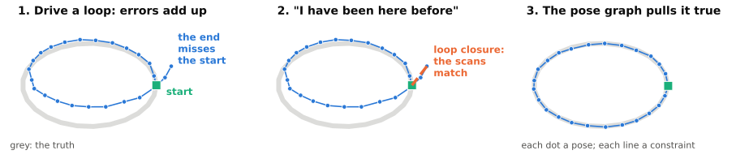
How it works
- Odometry: line up each scan with the last few (ICP). Each pose is a dot.
- The pose graph: the dots, joined by lines: "pose 7 is 1.2 m ahead of pose 6".
- Loop closure: the car is back at the start. The scans match: "pose 25 is at pose 0". That adds one more line.
- Optimise: bend every line a little, so all of them agree as well as they can. The drift spreads out and the loop closes.
- Build the map from every scan at its corrected pose.
| Good at | Bad at |
|---|---|
| maps of real places, from our own drives | loop closure needs features (trees, kerbs); plain walls give few |
| about ten times sharper than maps from the EKF's poses | a false loop closure bends the whole map |
In our car: pixi run map-drive (KISS-SLAM, offline, on a laptop), in use as a
tool. In Ravensim its map was 2.3 cm off the truth, against 27-33 cm from the EKF's
poses. See Maps from drives.
3.7 KISS-ICP and KISS-SLAM
The idea: "Keep It Small and Simple": ICP done carefully, scan after scan, with few settings to tune.
| KISS-ICP | KISS-SLAM | |
|---|---|---|
| What | lidar odometry: "how far did I move?" | KISS-ICP + loop closure + a pose graph |
| Map needed? | no | makes one |
| Drift | slow (0.04 m per 100 m on Gazebo's lot) | pulled out by loop closures |
| Ours | kiss_ekf, challenger |
map-drive, in use offline |
From: I. Vizzo et al., RA-L 2023; T. Guadagnino et al., IROS 2025 (both PRBonn, MIT).
3.8 Place recognition: "have I been here before?"
The idea: turn one scan into a short fingerprint, so two visits to one place can be matched quickly, even after a long drift.
- Take a lidar scan.
- Squash it into a small picture or vector (the fingerprint).
- Compare it with the fingerprints of every place seen so far.
- A close match = a loop closure for SLAM, or a restart for NDT when lost.
| Method | Fingerprint |
|---|---|
| Scan Context (G. Kim, A. Kim, IROS 2018) | the scan as rings and wedges round the car: the highest point in each |
| OverlapNet (X. Chen et al., RSS 2020) | a network that guesses how much two scans overlap |
Good at: finding the place after big drift. Bad at: places that look alike (the same weakness as NDT). In our car: studied (survey).
3.9 Learned MCL
The idea: keep AMCL's particles, but let a neural network judge how well a scan fits each guess.
| Idea | What | Status |
|---|---|---|
| IR-MCL (PRBonn, 2023) | AMCL with a network as its scan model | studied: no licence stated, so the idea only |
| Transformer MCL | a transformer helps the particle filter | studied: needs real maps to train on |
Our AMCL's scan model is a swappable part, so one can be tried later (what we decided).
4. Perception: "what's around me?"
The full story: Perception, Learn: lidar, Kerbs.
lidar points ─▶ remove the ground ─▶ cubes (voxels) ─▶ groups (clusters) ─▶ tracked things
camera picture ─▶ detector (boxes + names) ──────────────────────▲ names them (fusion)
camera picture ─▶ lane finder ─▶ the lane's lines4.1 Ground removal, voxels and clustering
The idea: throw away the road, chop what's left into cubes, and group touching cubes into things.
How it works
- Find the ground: fit the road's surface near the car (it may tilt or slope).
- Remove it: what is more than a few centimetres above is "something".
- Voxels: cut the rest into small cubes (ours: 0.25 m) and keep which are full.
- Cluster: join full cubes that touch. Each group is one thing. DBSCAN does the same for scattered points: a point with enough neighbours close by starts a group.
| Good at | Bad at |
|---|---|
| finds anything solid, trained on nothing | doesn't know what a thing is |
| exact distances | two things touching become one; kerbs hide near the ground |
In our car: aav_voxels (cubes), the kerb step finder (default), radar DBSCAN
(in use). Ground finding was learned from Patchwork++ (S. Lee et al., IROS 2022).
Numbers: survey.
4.2 Object detection: YOLO and DETR
The idea: a neural network looks at a picture and draws a box round each thing it knows, with a name: "person, 92 %".
How it works
- The picture goes into a network trained on many labelled pictures.
- YOLO ("You Only Look Once"): one pass predicts boxes on a grid, then removes duplicates.
- DETR (DEtection TRansformer): a transformer predicts a short list of boxes directly, with no duplicate-removal step. RF-DETR is a fast, small DETR.
- Out come boxes, names and scores.
| Good at | Bad at |
|---|---|
| names things: person, car, stop sign | needs training data; misses what it never saw |
| cheap cameras | guesses distance badly from one picture |
In our car: RF-DETR Nano, default: saw the stop sign from 20 m, YOLO11n from 10 m. YOLO: challenger.
From: J. Redmon et al., CVPR 2016 (YOLO); N. Carion et al., ECCV 2020 (DETR); RF-DETR (Roboflow).
4.3 Tracking: Kalman per thing, and SORT
The idea: give each thing an id, and guess where it goes next, so one frame's person is the next frame's same person.
How it works
- Each tracked thing has its own small Kalman filter: position and speed.
- Predict where each one will be in the next frame.
- Match the new detections to the predictions (nearest, or the most overlap).
- Update the matched ones; start new tracks; drop tracks unseen for a while.
SORT (Simple Online and Realtime Tracking) is exactly this, with boxes: a Kalman filter each, matched by overlap (A. Bewley et al., ICIP 2016).
| Good at | Bad at |
|---|---|
| speeds and ids: "that person is walking left" | two people crossing can swap ids |
| simple and cheap | one motion model for everything |
In our car: the things tracker (aav_things_rs), default, after AB3DMOT
(X. Weng et al., IROS 2020).
4.4 Lane finding
The idea: find the painted lines in the picture and fit a curve to each.
- Bird's-eye warp: stretch the picture as if seen from above.
- Paint mask: keep the white and yellow pixels.
- Sliding windows: climb up the picture, following each line.
- Fit a curve (a polynomial) to each line's pixels.
| Good at | Bad at |
|---|---|
| no training; fast | worn paint, snow, shadows, glare |
In our car: aav_lane_finder_rs, default. The lane pose uses it to cut the
sideways error.
4.5 Camera-lidar fusion
The idea: the lidar says where, the camera says what.
- Calibrate where the camera sits on the car.
- Project each lidar thing's box into the picture.
- Where it overlaps a detector box, give the thing that name.
Good at: exact distances with names. Bad at: needs exact calibration; one sensor late.
In our car: in the things tracker, after Autoware's roi_cluster_fusion idea,
default. Learned all-in-one fusion (BEVFusion): studied.
5. Maps: what the car remembers
| Map | What each piece holds | Made by | Used by |
|---|---|---|---|
| Occupancy grid | a square: free, full or unknown | SLAM, or drawn | AMCL, planners |
| NDT map | a cube's blob | SLAM from drives | NDT |
| Lane map (Lanelet2) | lanes, their edges, neighbours, stop lines | drawn or imported | the lane path, the lane pose |
| Street map | roads and names | OpenStreetMap | routes |
| Costmap | a square's cost, 0 to 254 | the sensors, live | the planners, MPPI |
More: Maps and position, Costmaps.
5.1 Occupancy grids
The idea: chop the ground into squares (our AMCL's map: 5 cm) and mark each free, full or unknown. Each lidar beam marks the squares it passed through as free and the one it hit as full. Good at: simple, fast to search. Bad at: flat (no height); big for big places.
5.2 NDT maps
The blobs of 3.4, saved. Small and smooth. Ours are built by KISS-SLAM from our own drives (Maps from drives).
5.3 Lane maps: Lanelet2
The idea: the road as small lane pieces (lanelets), each with a left edge, a right edge, the pieces it leads to, and its rules (one way, a stop line).
Good at: planning by lanes, like a driver. Bad at: someone must draw it.
In our car: our own Rust reader (lanelet-map); path:=lane_lanelet2, challenger.
From: F. Poggenhans et al., ITSC 2018.
5.4 Costmaps: layers and inflation
The idea: a grid where each square's number says how bad it is to drive there.
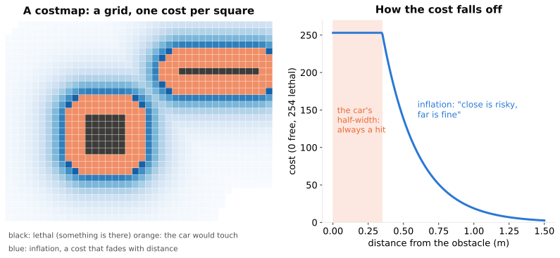
How it works
- Layers, each drawing into the grid:
- the static layer: the saved map's walls;
- the obstacle layer: what the lidar sees now;
- our extra layers: kerbs, lanes.
- Lethal (254): something is there.
- Inscribed (253): the car's centre here means its body touches it.
- Inflation: the cost fades with distance: "close is risky, far is fine". So paths keep a margin.
- The planners and MPPI add up the costs along each path and pick low ones.
| Good at | Bad at |
|---|---|
| any sensor can draw into it | a grid: a lane is only what the layers draw |
| the margin comes for free | too much inflation closes narrow gaps |
In our car: aav_costmap (Rust, from Nav2), default, in 64 m chunks.
Numbers: survey.
5.5 Map chunks
The idea: keep only the map near the car in memory, in tiles (ours: 64 m), and load the next ones as it drives. Good at: big maps on a small computer (memory 474 → 145 MB). Bad at: a seam between tiles must match. From: Autoware's map loading idea.
5.6 Removing moving things across several drives
The idea: a parked car or a walker is in one drive, not in all. Keep only what every drive saw.
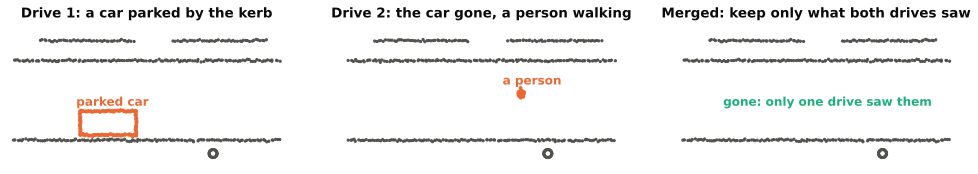
How it works
- Drive the same route twice or more, on different days.
- Build a map from each drive (SLAM).
- Line the maps up (ICP).
- Keep each point only if the other drive has a point near it (ours: within 25 cm).
- A person checks the result in the map editor (TODO 251).
| Good at | Bad at |
|---|---|
| no network needed; parked cars and walkers drop out | anything only one drive saw drops out too: drive the same route |
| a car parked in the same spot every time stays |
In our car: pixi run map-drive --merge, in use for two drives; more than two
is next. Learned methods (MapMOS, PRBonn): studied.
6. Planning
6.1 Route planning: which streets?
The road network is a graph: crossings are dots, roads are lines, each line has a cost (length, or time).
Dijkstra and A*
The idea: grow outwards from the start, always from the cheapest place found so far, until you reach the goal. A* adds a guess of the distance left, so it leans toward the goal and looks at far fewer places.
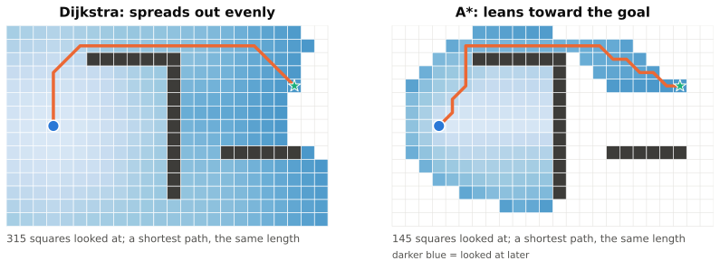
How it works
- Put the start in a list, with cost 0.
- Take the place with the lowest score from the list.
- Dijkstra: score = cost so far.
- A*: score = cost so far + a guess of the cost left (straight-line distance).
- Look at its neighbours. If this way to one is cheaper, note it and add it to the list.
- Repeat until the goal comes out of the list.
- Walk back from the goal to read the path.
| Good at | Bad at |
|---|---|
| always finds the shortest way | a grid ignores the car's turning circle |
| A*: fast, if the guess never overestimates | big maps need many squares |
The same search works on a road graph (route), on a grid (path), and on car moves (Hybrid-A*, the lattice).
In our car: Dijkstra on the campus road graph (aav_routes), in use. From:
E. W. Dijkstra, 1959; P. Hart, N. Nilsson, B. Raphael, 1968.
OpenStreetMap and Valhalla
| What | |
|---|---|
| OpenStreetMap | the world's free street map, drawn by volunteers (ODbL) |
| Valhalla | a router: A* style search on OpenStreetMap's roads, offline |
Ask "drive to Lansdowne", get waypoints every 10-30 m. Good at: real streets, offline. Bad at: streets, not lanes. In our car: Valhalla, in use, on request (Routes).
6.2 Path planning: a line the car can drive
A car can't turn on the spot. Our tightest turn is about 2.9 m radius (wheelbase 1.56 m, steering at most 0.5 rad). A path planner must respect that.
A* on a grid
As in 6.1, on the costmap's squares. Good at: fast, simple. Bad at: ignores the turning circle: in Gazebo, Smac 2D planned a U-turn as a straight line back. In our car: Smac 2D, NavFn, Theta*: retired with Nav2 on 17 Nov.
Hybrid-A*
The idea: A*, but each step is a real car move (full left, straight, full right), so every path can be driven.
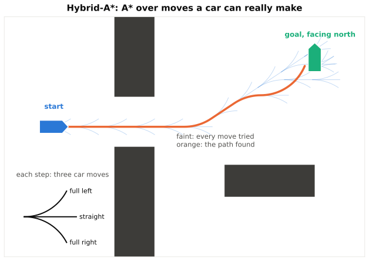
How it works
- From the car's pose, try three short arcs: full left, straight, full right (and the same in reverse, if allowed).
- Throw away arcs that hit something on the costmap.
- Score each end as A* does: cost so far + a guess of the cost left.
- Keep one pose per small cell and heading, so it doesn't explode.
- Near the goal, try a Reeds-Shepp curve straight to it (below); if it's free, done.
| Good at | Bad at |
|---|---|
| smooth paths in open space, parking lots | slower than a grid |
| reversing | knows no lanes: on roads it took the wrong side (74 % over the centre line) |
In our car: path:=hybrid_rs (ported from Nav2's Smac Hybrid), challenger.
From: D. Dolgov, S. Thrun, M. Montemerlo, J. Diebel, IJRR 2010.
State lattices
The idea: work out a list of car moves once, each ending on a grid dot and heading, then join them with A*.
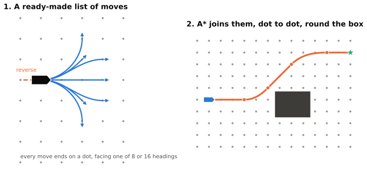
How it works
- Offline: for each heading (ours: 16), make short moves that end exactly on a grid dot and heading: straight, gentle curves, sharp ones, reverse.
- Check each is drivable: never tighter than full lock.
- Online: A* joins moves, end to start, round the costmap's obstacles.
- A smoother rounds off the joins.
| Good at | Bad at |
|---|---|
| fast (3-5 ms a plan in ours) | only as good as its list of moves |
| every path drivable, reversing too | knows no lanes on its own |
In our car: aav_planner, path:=lattice_rs, car champion; the default joins
it to the lane's centre. Our moves: Controllers.
From: M. Pivtoraiko, R. Knepper, A. Kelly, J. Field Robotics 2009.
RRT and RRT*
The idea: grow a tree of random steps from the start until a branch reaches the goal.
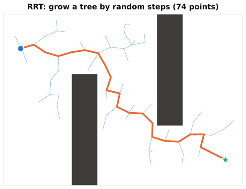
- Pick a random spot on the map (sometimes the goal itself).
- Find the tree's nearest point to it.
- Step a little toward the spot. If the step is free, add it to the tree.
- Repeat until a branch is near the goal.
- RRT* also rewires nearby branches when a shorter way appears, so the path improves the longer it runs.
| Good at | Bad at |
|---|---|
| big, many-dimension spaces (robot arms) | wiggly paths that need smoothing |
| no grid needed | random: a different path each time |
In our car: not built; on roads a lattice suits better. From: S. M. LaValle, 1998 (RRT); S. Karaman, E. Frazzoli, IJRR 2011 (RRT*).
Dubins and Reeds-Shepp curves
The idea: the shortest way between two poses for a car with a fixed turning circle is always a few simple pieces: turn, straight, turn.
| Dubins (1957) | Reeds-Shepp (1990) | |
|---|---|---|
| Moves | forward only | forward and reverse |
| Pieces | 3: such as left-straight-left | up to 5, with cusps (stop, change direction) |
| Used for | joining poses quickly | finishing Hybrid-A*, parking |
Dubins: ◯──────────◯ Reeds-Shepp: forward ──▶ ╮
turn straight turn reverse ◀──╯ (a cusp)Good at: exact and instant. Bad at: ignore obstacles (check them after); the curvature jumps where pieces meet. In our car: inside Hybrid-A*.
Smoothing
The idea: a searched path is jagged; bend it gently, keeping clear of obstacles and within the steering's limits.
| Way | What |
|---|---|
| move each point toward its neighbours, away from obstacles | Nav2's smoother; ours |
| clothoids: curvature that ramps, not jumps | our smooth lattice moves (T. Fraichard, A. Scheuer, 2004) |
| an optimisation along the lane (piecewise-jerk) | Apollo's; studied |
6.3 Motion planning and control: the next few seconds
These run 20 times a second. They take the path and decide the steering and the speed now.
Pure Pursuit
The idea: pick a point on the path a little ahead, and steer the circle arc that reaches it.
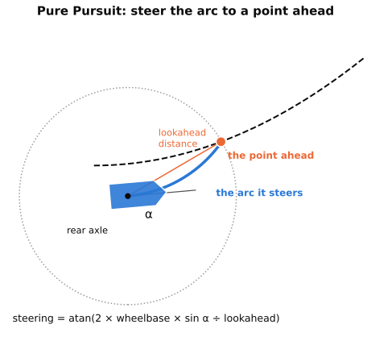
How it works
- Draw a circle of radius lookahead (for example 2-3 m) round the rear axle.
- Where it meets the path: the point ahead.
- Measure α, the angle from the car's heading to that point.
- Steer: δ = atan(2 × wheelbase × sin α ÷ lookahead).
- Next tick, do it again.
| Good at | Bad at |
|---|---|
| very simple, very stable | cuts corners; a short lookahead wobbles, a long one cuts more |
| easy to explain | knows nothing of obstacles or the car's lag |
In our car: aav_track, challenger; in use in drive-to-point (A to B).
From: R. C. Coulter, CMU, 1992.
Stanley
The idea: steer by the heading error, plus a correction for the sideways error at the front axle that is strong at low speed and gentle at high speed.
δ = heading error + atan(k × sideways error ÷ speed).
Good at: close tracking, no lookahead to tune. Bad at: noisy at very low speed; forward only.
In our car: aav_track, challenger. From: S. Thrun et al., J. Field Robotics 2006
(the DARPA Grand Challenge winner).
PID
The idea: push in proportion to the error (P), to the error that has built up (I), and to how fast the error changes (D).
| Term | By feel |
|---|---|
| P | "I'm 0.5 m/s too slow: press harder" |
| I | "I've been slow for a while: press harder still" (beats a hill) |
| D | "I'm catching up fast: ease off" (stops overshoot) |
Good at: everywhere, cheap, no model. Bad at: no look ahead; tuning by hand. In our car: the speed loop (PI), the steering motor's own PID. Learn: control teaches it with our numbers.
MPC: Model Predictive Control
The idea: with a model of the car, plan the best steering for the next few seconds, send only the first step, then plan again.
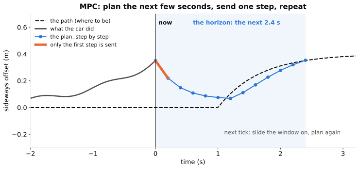
How it works
- Look at where the car is, and the path for the next N steps (the horizon).
- Use the car's model to predict where each choice of steering takes it.
- Solve a small optimisation (a QP): stay close to the path, steer gently, respect the limits.
- Send only the first step.
- Next tick, slide the window on and solve again (receding horizon).
| Good at | Bad at |
|---|---|
| closest to the path; knows the limits and the lag | needs a good model |
| plans ahead for bends | ours sways and can't reverse yet (TODO 213) |
In our car: mpc_lag_rs, challenger: followed 2-7 times closer than MPPI, but
swayed more. Numbers: survey.
MPPI: Model Predictive Path Integral
The idea: try thousands of random futures through a model of the car, score each, and send the weighted average of the good ones.
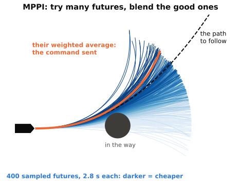
How it works
- Start from last tick's plan of steering and speed.
- Add random wobbles to it: thousands of slightly different plans (ours: 2000, 2.8 s long).
- Run each through the car's model, lag included: a possible future.
- Score each: far from the path, near obstacles on the costmap, jerky steering = costly.
- Weigh: cheap futures count a lot, costly ones almost nothing.
- The weighted average is the new plan. Send its first step; repeat.
| Good at | Bad at |
|---|---|
| avoids obstacles and reverses, with no special case | heavy: thousands of futures each tick |
| any cost, any model, no derivatives | many settings; random, so a little noisy |
In our car: aav_mppi_lag (ported from Nav2, with our lag model),
steer:=mppi_lag_calm: default. Every leg of every tour in the league; it predicts
the car 70 times better with the lag. Numbers:
survey, MPPI with lag.
From: G. Williams, A. Aldrich, E. Theodorou, J. Guidance, Control, and Dynamics 2017.
The diffusion planner (learned)
The idea: a small network, trained on our planners' paths, draws paths from noise; a guard checks every one before use.
How it works
- Train: show it thousands of good paths (from our lattice and Hybrid-A*) on many maps.
- Run: start from random noise; the network removes the noise, step by step, into a path (diffusion; ours uses flow matching, a faster cousin).
- Draw 16 paths at once.
- The guard: each path must pass eight checks (no collision, never tighter than full lock...).
- Use the cheapest that passes; if none, use the lattice's path.
| Good at | Bad at |
|---|---|
| quick tours (171-175 s against 180-185 s, 8 Nov) | copies its teachers: at best it equals them |
| learns what is hard to write as rules | needs a GPU on the car |
In our car: planner:=diffusion, challenger, a path planner, not a rival to
MPPI (what we decided).
Which follower, at a glance
| Pure Pursuit | Stanley | MPC | MPPI | |
|---|---|---|---|---|
| Needs a car model | no | no | yes | yes |
| Avoids obstacles itself | no | no | not ours | yes |
| Reverses | no (ours) | no | not yet | yes |
| CPU | tiny | tiny | small | big |
| Ours | challenger | challenger | challenger | default |
Behaviour, the rules of the road above these planners, has its own section next: 7. Behaviour.
7. Behaviour: deciding what to do
Ben, 19 Nov: "Behaviour might be good too."
The planners answer "how do I get there?". Behaviour answers "what should I do now?": keep going, slow for a stop sign, wait for a person, go again.
| Part | The question |
|---|---|
| 7.1 Where it sits | between which parts? |
| 7.2 State machines | which mode am I in? |
| 7.3 Hierarchical state machines | modes inside modes? |
| 7.4 Behaviour trees | which small task now? |
| 7.5 Traffic rules | stop lines, signs, crosswalks, right of way |
| 7.6 Speed round obstacles | approach, follow, stop; no flip-flopping |
| 7.7 Prediction-aware decisions | is that gap big enough? |
| 7.8 Under uncertainty | what if I'm not sure what they'll do? |
| 7.9 Learned behaviour | can a network learn the rules? |
| 7.10 Ours | what our car really does |
7.1 Where behaviour sits
The idea: behaviour sits between the route and the motion planner. The route says which streets; behaviour picks the manoeuvre; the motion planner draws the line and the speed.
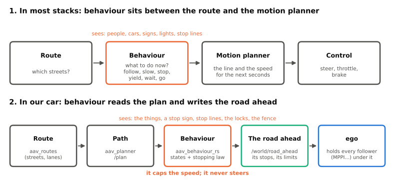
- The route gives the streets and lanes to the goal.
- Behaviour looks at what perception sees (people, cars, signs, stop lines).
- It picks what to do: follow the lane, slow, stop, yield, wait, go.
- It hands the motion planner a goal for the next seconds: a stop point, a speed limit.
- The motion planner and control do the rest.
In our car the order is slightly different: our path planner draws /plan first;
the behaviour planner reads it and writes the road ahead (/world/road_ahead): the
plan's next 40 m, its stops and its speed limits. Ego holds every follower under it
(the whole car). It caps the
speed; it never steers.
7.2 Finite state machines
The idea: a short list of states (modes), and the events that move the car from one to the next.
How it works
- Write down the states: for example DRIVE, APPROACH, STOPPED, WAIT, GO.
- For each state, write what the car does in it (its speed cap, say).
- For each state, write the events that leave it, and where they go ("stop sign ahead": APPROACH).
- Each tick, check the current state's events; take the first that is true.
- Nothing else can happen: every path through the machine is on paper.
Our states and every arrow between them are in 7.10.
| Good at | Bad at |
|---|---|
| simple; every state and arrow can be tested | grows messy with many rules: arrows everywhere |
| easy to explain and to show on a screen | every new rule touches many states |
In our car: the behaviour planner (aav_behaviour_rs), default in stack:=ours;
the navigator (aav_navigator: plan, follow, replan, recover), default. Both are
state machines. The DARPA Urban Challenge cars (2007) drove on state machines too.
7.3 Hierarchical state machines
The idea: states inside states, so a big mode (ON THE ROAD) holds small ones (FOLLOW LANE, STOP AT LINE), and a rule written once on the big one holds for all of them.
┌ ON THE ROAD ───────────────────────────────┐ ┌ PARKING ──────────┐
│ FOLLOW LANE ─▶ APPROACH LINE ─▶ STOP ─▶ GO │ ─────▶ │ FIND ─▶ PARK │
└──────────────── e-stop: from any inner state ─▶ SAFE STOP ◀──────────────┘- Group states that belong together into a parent state.
- Rules that apply to the whole group go on the parent, once ("e-stop: SAFE STOP").
- Inside, the small machine runs as before.
- Leaving the parent leaves whichever inner state was running.
| Good at | Bad at |
|---|---|
| far fewer arrows than one flat machine | more to learn; tools help (statecharts, D. Harel, 1987) |
| each level can be tested alone | deep nests hide where the car really is |
In our car: studied. Ours is flat, but each state carries a reason
(APPROACH(obstacle), WAIT(moving)), and "from any state" rules (the e-stop, an aborted
goal, something moving near) sit above it: a small step toward a hierarchy.
7.4 Behaviour trees
The idea: a tree of small tasks, ticked from the top many times a second; each returns success, failure or running.
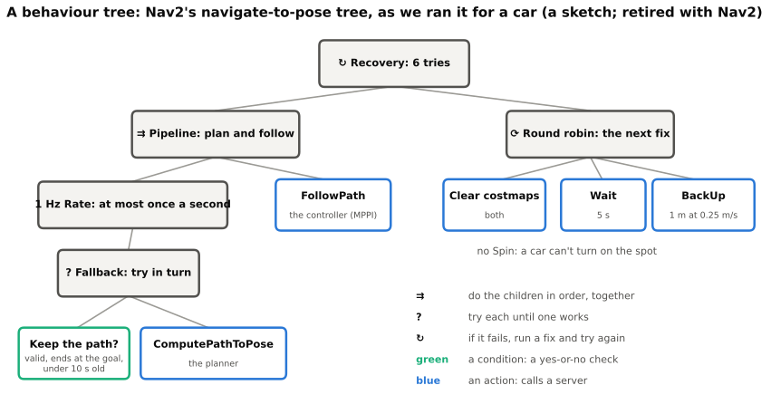
How it works
- Leaves do the work: an action ("ComputePathToPose") or a condition ("is the path still valid?").
- Sequence (→): do the children in order; stop at the first failure.
- Fallback (?): try the children in order; stop at the first success.
- Decorators wrap one child: "at most once a second", "retry 6 times".
- Each tick starts at the root and walks down to what is running.
Nav2's bt_navigator, as it was: our trees were Nav2's
navigate_to_pose_w_replanning_and_recovery.xml (Jazzy 1.3.13), changed for a car:
| Part | What it did |
|---|---|
| Recovery, 6 tries | if plan-and-follow fails, run one fix, try again |
| plan at most 1 Hz, but keep a good path | keep the path while it still ends at the goal, is valid and under 10 s old (20 s within 8 m of the goal); else plan again (TODO 149, TODO 17) |
| FollowPath | the controller (MPPI) |
| the fixes, in turn | clear both costmaps; wait 5 s; back up 1 m at 0.25 m/s (only with reversing) |
| no Spin | a car can't turn on the spot |
| Good at | Bad at |
|---|---|
| big behaviours from small, reusable parts | harder to follow than a short state machine |
| easy to add a new fix or check | "what state is it in?" has no one answer |
In our car: retired with Nav2 (17 Nov). Our navigator (aav_navigator) is one
state machine that does the same steps, and drove the same in the league
(our navigator). From: Nav2 (Apache-2.0), BehaviorTree.CPP.
7.5 Rule-based traffic logic
The idea: each traffic rule (a stop line, a stop sign, a crosswalk, who goes first) is its own small module. Each one asks for a stop or a slower speed; the lowest wins.
How it works
- The map and perception say what is ahead: a stop line in 20 m, a crosswalk, a junction.
- Each rule's module looks at its own thing: "a stop sign: stop at the line, stand, then go".
- Each module adds a stop point or a speed limit to the path ahead.
- The strictest one wins: the car stops at the nearest stop that applies.
- When a rule is satisfied (stood 2 s, the crosswalk is clear), its module lets go.
| Rule | What it asks |
|---|---|
| Stop line, stop sign | stop with the bumper at the line, stand, then go |
| Crosswalk | slow; stop if a person is on it or walking to it |
| Right of way | at a junction, who came first, or who is on the main road, goes first |
| Traffic light | stop on red or amber if there's room; go on green |
How the big stacks do it (in general terms):
| Stack | Behaviour is built as |
|---|---|
| Apollo (Baidu, Apache-2.0) | scenarios (lane follow, stop sign, traffic light, pull over...), each split into stages (approach, stop, creep, cross). A scenario manager picks one; its stages run in turn |
| Autoware (Apache-2.0) | the behaviour path planner (modules that change the line: lane change, going round, pulling over) and the behaviour velocity planner (modules that change the speed: stop line, crosswalk, intersection, traffic light). Each module adds its own stop or slow-down |
| Good at | Bad at |
|---|---|
| each rule alone, tested alone; matches the highway code | a module per rule: many modules |
| easy to say why the car stopped | rules that clash need an order |
In our car: stop signs, in use (a safety lock: the camera sees the sign, and the watcher's lock holds the car 4 s at 4.7 m, then ignores signs 10 s); stop lines from the route's Lanelet2 map (stand 2 s, then go; TODO 220), challenger with Lanelet2 routing. Crosswalks, traffic lights and right of way: not built. Ours is Autoware's shape in small: each rule adds a stop to the road ahead, and the lowest cap binds.
7.6 Speed planning round obstacles: approach, follow, stop
The idea: for each thing ahead, pick the speed that lets the car stop (or keep a safe gap) in the room left, and don't flip-flop when the thing flickers in and out.
How it works
- Approach: find the room left to the thing (or the stop line), less a margin.
- Stop: the speed cap is the fastest speed that can still stop in that room (our
stopping law,
v_cap(left)). - Follow: if the thing moves the same way, keep a gap that grows with speed instead of stopping (the car-following idea; for example the IDM, M. Treiber et al., 2000).
- Hysteresis: slow down at once, but speed up again only once the thing has stayed gone a while.
Hysteresis: why the hold
A person at the lane's edge drops in and out of the lane, tick by tick. Without a hold, each drop out lets the cap rise, and each drop in brings it down: the car speeds up and slows again, over and over.
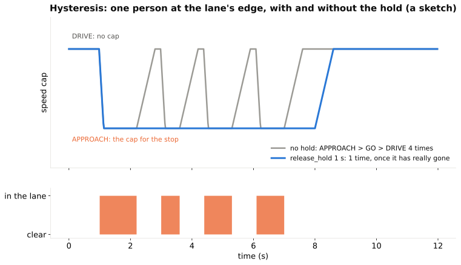
What we found (TODO 189, 15 Nov, sim-check --moving): one person crossing flipped the
behaviour APPROACH(obstacle) > GO > DRIVE four times. The fix is a 1 s
release_hold: an obstacle must stay gone 1 s before APPROACH lets go of it, keeping its
cap meanwhile. Slowing is never held. Tested (a flickering obstacle stays in
APPROACH); the simulator re-run of --moving is still to do.
| Good at | Bad at |
|---|---|
| a stop the car can really make, at any speed | the stopping law's numbers are guesses until the car tests |
| the hold stops the speed hunting | the hold makes the car a little slower to go again |
In our car: approach and stop with the stopping law, and the 1 s hold: default
in stack:=ours. Following a moving car at a gap: not built; ours waits for anything
moving (below). How the car stops.
7.7 Prediction-aware decisions: gaps and yielding
The idea: decide from where things will be, not only where they are: "will that person be in my lane when I get there?", "is that gap in the traffic big enough?".
How it works
- Predict each thing a few seconds ahead (simplest: it keeps its speed and heading).
- Predict the car along its own path, at its speed.
- Do the two meet, in space and time, with some slack?
- Gap acceptance: at a junction, go only if the gap before the next car is longer than the time you need to cross, plus a margin.
- Yield if not: slow or wait, and look again next tick.
| Good at | Bad at |
|---|---|
| sees a person walking in before they're in the lane | a prediction's error grows with time |
| smooth: slows early instead of braking late | people change their minds |
In our car: two simple, straight-line predictions, both default with the things
(things:=true, on in stack:=ours):
| Rule | What it does |
|---|---|
Walking into the lane (TODO 194, Crossing) |
a thing 0.2 m/s or more toward the lane counts if, at its speed, it is in the lane before the car gets there, plus 2 s, within 6 s. Before, a person crossing was seen about 1 m from the bumper |
| Anything moving near (17 Nov) | a thing moving 0.3 m/s or more within 10 m, or on the road ahead within 3 s: WAIT (moving); go 1 s after it has gone (Ben, 16 Nov: "we should likely just stop") |
Gap acceptance at junctions: not built (we wait for anything moving instead).
7.8 Decisions under uncertainty: POMDPs and games
The idea: the car can't see what others intend, so keep a belief (odds) over what they might do, and pick the action that is best on average over that belief.
How it works (a POMDP, in general terms)
- List what you can't see: "the person will cross" or "the person will wait".
- Keep a belief: the odds of each, say 30 % and 70 %.
- After each new look, update the odds (a Bayes filter, as in localization).
- For each action (go, creep, wait), add up its reward over the odds, a few steps ahead.
- Take the best; plan again next tick.
Game-theoretic ideas: other drivers react to us too. Treat a merge or a four-way stop as a game: each driver picks a move knowing the other will answer. A car that creeps forward can make the other driver yield (D. Sadigh et al., RSS 2016).
| Good at | Bad at |
|---|---|
| honest about what it doesn't know; creeps, then commits | heavy: the number of futures explodes |
| handles the polite dance at a four-way stop | the odds and rewards need data to set |
In our car: studied. A POMDP: L. P. Kaelbling, M. L. Littman, A. R. Cassandra, 1998.
7.9 Learned behaviour: imitation and reinforcement
The idea: instead of writing the rules, learn them: copy good drivers (imitation), or try, get a score, and improve (reinforcement).
How it works
- Imitation learning: record people driving; train a network from what the car saw to what the driver did (behaviour cloning; ALVINN, D. Pomerleau, 1989; ChauffeurNet, M. Bansal et al., RSS 2019).
- Its weak spot: it never saw its own mistakes, so it doesn't know how to recover; DAgger (S. Ross et al., 2011) asks the expert what to do in the states the network reaches.
- Reinforcement learning: in a simulator, the network tries actions and gets a reward (progress, comfort; a crash costs a lot).
- Over millions of tries, it learns which actions pay.
- Behind a guard: the safety locks still stop the car whatever it decides.
| Good at | Bad at |
|---|---|
| rules that are hard to write down (a polite merge) | hard to explain why it did something |
| improves with more data | needs a lot of data or simulation; rewards are easy to get wrong |
In our car: studied only. Our learned part is a path planner (diffusion, 6.3), behind a guard; behaviour stays rules we can read.
7.10 Our behaviour planner (aav_behaviour_rs)
The idea: six states and one stopping law: know why the car should slow, and put a speed cap and a stop in the road ahead. It can't stop the car itself: a lock, ego at the road ahead's end, or the navigator's goal check makes every final stop.
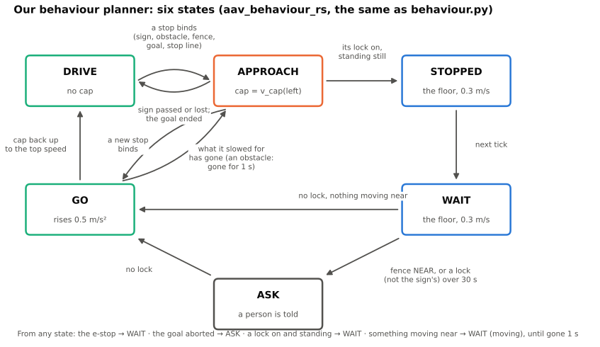
The two twins
| Package | Status | |
|---|---|---|
| Rust | aav_behaviour_rs |
default in stack:=ours; the twin the car runs with behaviour:=true (the car champion runs with behaviour off) |
| Python | aav_behaviour (behaviour.py) |
removed 20 Nov (save/python-behaviour) |
The Rust gives the Python's answers bit for bit (vectors.json), at 1.3 % of a core
against 9.0 % (16 Nov). Not yet run on the car.
The states
| State | Its cap | Enters when |
|---|---|---|
| DRIVE | no cap (0.0 = no limit) | the start; GO's cap reaches the top speed; a sign passed by over 1 m or lost 5 s; the goal ended |
| APPROACH | v_cap(left), never below the floor 0.3 m/s; falls no faster than 2 m/s²; the sign's never rises |
a stop binds: its v_cap is below the top speed |
| STOPPED | the floor | in APPROACH, its own lock is on and the car stands (under 0.05 m/s) |
| WAIT | the floor | the next tick after STOPPED; any lock on with the car standing; the e-stop; something moving near |
| GO | rises at 0.5 m/s² from the floor | no lock left (and nothing moving near); or what APPROACH slowed for has gone (an obstacle: for 1 s) |
| ASK | the floor; a person is told | the fence says NEAR with the car standing; a lock (not the sign's) over 30 s; the goal aborted |
What it stops for (each a Stop: a reason and the metres left)
| Reason | left is |
The final stop |
|---|---|---|
sign |
camera range to the sign − 4.7 m | the stop_sign lock |
obstacle |
to a moving thing in the lane (or the scan's nearest point), less bumper and gap | the stop zone, then the stop_zone lock |
moving |
0 m: the road ahead ends at the car | ego holds the car at 0 |
stop_line |
to the route's stop line, the front bumper on it | the road ahead ends there; served after 2 s standing |
fence |
along the plan to where the geofence would say NEAR | the geofence lock |
goal |
along the plan to its end | the navigator's goal check |
The stopping law (aav_description stop_law.py, and Rust ego-core stop_law.rs):
v_cap(d) = a·( √(τ² + 2d/a) − τ ) the fastest speed that can still stop in d metres
a = 1.0 m/s² (planned braking) τ = 1.47 s (every delay, plus easing in the brake)| Distance left | 0.5 m | 1 m | 2 m | 5 m | 10 m |
|---|---|---|---|---|---|
v_cap |
0.31 m/s | 0.57 m/s | 1.01 m/s | 2.02 m/s | 3.24 m/s |
Every number is a guess until the car tests (How the car stops).
How it works, each tick
- Gather the stops in view: the sign, the lane ahead, the fence, the goal, stop lines.
- The stop with the lowest cap binds.
- Step the machine (the table above); "from any state" rules first.
- Work out the state's cap, falling no faster than 2 m/s².
- Write the road ahead (10 Hz): the plan's next 40 m, its stops, and its limits under the cap. Ego holds every follower (MPPI, the trackers, the point driver) to it.
- Say the state on
/drivers/nav/behaviour/state(5 Hz) for the screens.
Why it caps and doesn't steer: a parked thing is the path planner's to go round (the lane pass); behaviour only waits for what moves. So one part owns the line, one owns "how fast, and where to stop", and the locks own the final stop. The cap is always 0.0 (no limit) or between the floor and the top speed: it only ever slows the car, and never clears a lock.
| Good at | Bad at |
|---|---|
| one law for every planned stop; the reason is on screen | holds for anyone walking beside the car within 10 m |
| the locks still make every final stop | no traffic lights, crosswalks or right of way yet |
| league: a little less sway with it (0.063 against 0.074 without) | ASK's reply from the HUD not built; not yet on the car |
In our car: default in stack:=ours; the car champion: off. Numbers:
survey.
Designs: behaviour and speed,
the whole car.
Behaviour, at a glance
| Idea | Decides by | Ours |
|---|---|---|
| Finite state machine | the current state's events | default (behaviour planner, navigator) |
| Hierarchical state machine | states inside states | studied |
| Behaviour tree | ticking small tasks | retired (Nav2's bt_navigator) |
| Traffic-rule modules | one module per rule, lowest stop wins | stop signs in use (a lock); stop lines challenger |
| Speed round obstacles, with a hold | the stopping law; hysteresis | default |
| Prediction-aware | where things will be | default (crossing, moving near) |
| POMDP, games | odds over intentions | studied |
| Imitation, reinforcement | learned from data | studied |
8. Control and the car
The full story: Learn: control, Car model, The car as a linear model, Learn: state space.

8.1 Ackermann steering
The idea: in a turn, the inner front wheel turns more than the outer one, so both roll round the same centre, on the line of the rear axle. The steering linkage does this by itself; our software sends one angle. Learn: control has the picture and our numbers.
8.2 The bicycle model
The idea: merge the two front wheels into one in the middle, and the two rear wheels likewise. Then:
turn rate ω = v × tan(δ) ÷ L steering δ = atan(L × ω ÷ v)v = speed, δ = steering angle, L = wheelbase (1.56 m, vehicle.yaml). Good at: right at
our low speeds. Bad at: no tyre slip (fine below a few m/s). In our car: ego
(aav_ego_rs), in use, and inside MPPI, MPC and Ravensim.
8.3 Transfer functions: dead time plus a lag
The idea: each actuator is modelled as wait, then ease toward the command.
command ─▶ dead time (nothing happens) ─▶ first-order lag (eases in) ─▶ what the car does
e.g. 0.1 s time constant T: 63 % there after T- Send a step: "throttle to 30 %".
- For the dead time, nothing happens.
- Then the speed rises toward its new value, 63 % of the way after one time constant.
- Fit both numbers to a recorded run. Every planner that knows them predicts the car better.
In our car: the shared car model (Python and Rust); car-test --hallway measures
them, with error bars. Untested on the car: the numbers in vehicle.yaml are guesses
until then (testing plan, phase B).
8.4 Feed-forward plus PID
The idea: feed-forward gives the push you expect to need, from the car's model ("this speed on the flat needs this much throttle"); PID fixes what's left.
- Feed-forward from the model: speed wanted → throttle.
- PI on the error: wanted speed − measured speed.
- Add them; a negative answer becomes brake.
Good at: fast and calm, since PID only fixes the small error. Bad at: a wrong model makes PID work harder. In our car: the speed loop, default; it overshoots 14 % today (survey).
8.5 Braking with a heavier load
The idea: the same brake slows a heavier car less (a = F ÷ m). Measure how well the brake works, and press harder.
- Measure the slowing from the wheel speed.
- Compare with what the empty car would do: the brake's effectiveness.
- Brake harder by 1 ÷ effectiveness, never above the safe limit.
- Remember it from stop to stop: a person aboard stays aboard.
With 150 kg aboard our 181 kg car brakes at 55 % of its empty strength. In the simulator this cut a 0.87 m overrun to 0.21 m, then 0.05 m on the next stop. In our car: the adaptive brake, a switch (How the car stops).
8.6 The look-ahead: where the car will actually go
The idea: run the car model a couple of seconds into the future, from how the car is now, to draw where it will go. The general name is a predicted trajectory (or a forward prediction, a rollout). It is not the pose: the pose is where the car is now.
- Start from the car as it is: its speed, and where the steering and pedals are.
- Hold what the driver (or the planner) is asking for.
- Push it through the car model: the speed loop, the dead times and lags (8.3), the steering motor, the bicycle model (8.2).
- Keep a pose every 0.1 s, for 2 s: 21 poses, ten times a second.
plan (what the planner wants) ─ ─ ─ ─ ─ ─ ─ ─ ─ ─▶
look-ahead (where the car goes) ━━━━━━━━━━━┓ the gap = the lag
the car ▶ ┗━━━━━━━▶ the model knows about
Good at: shows the lag before it matters; a planner can check its plan against it; it gets
shorter when braking and longer when speeding up, like a Tesla's squiggly line. Bad at: only
as right as the car model, and every number in it is a guess until the stands and hallway
tests measure the transfer functions (the testing plan).
In our car: ego's look-ahead, /ego/trace (aav_ego_rs, the default), drawn by
the HUD and the developer window (the squiggly line).
9. Safety: the locks under everything
The idea: no planner is trusted alone. Simple, separate checks can always stop the car.
| Lock | The idea | Ours |
|---|---|---|
| Watchdog | if a sensor or a command goes quiet, frozen or wild: stop | the sensor watchdog; ego's 0.3 s timeout; the firmware's 100 ms |
| E-stop | a person, a button or a program stops everything, at once | the joystick deadman, /safety/estop, the hardware stop |
| Geofence | a fence on the map: stop before the stopping path reaches it | geofence: stops every program, never a person |
| Stop zone | anything in the box just ahead: stop | aav_stop_zone (from Nav2's collision monitor) |
| Simplex fallback | a clever controller runs, but a simple, proven one takes over if it misbehaves | the diffusion planner's guard falls back to the lattice; the locks override every driver |
All in use; never swapped (CLAUDE.md). Layer by layer: The safety case,
survey.
10. End-to-end learning: one big network
The idea: skip the separate parts; train one large network from pictures to steering, on huge amounts of human driving.
| Idea | In general terms |
|---|---|
| UniAD (Y. Hu et al., CVPR 2023) | one network whose parts (perceive, predict, plan) are trained together, for the plan |
| World models (such as Wayve's GAIA-1) | a network that imagines the next seconds of video, to learn and test in |
| Tesla (FSD v12 and later) | cameras only; a network trained on its fleet's driving |
| Wayve | end-to-end learned driving, tested on city streets |
Why we stay modular
| Modular (us) | End-to-end | |
|---|---|---|
| Testing | each part alone, scored the same way | the whole car at once |
| Explaining a mistake | look at the part | hard |
| Data needed | little | fleets of cars, many GPUs |
| Safety rules | written down, never swapped | learned |
Ben, 4 Nov: "we can't use end to end like tesla because we are a school project". We use learning in parts, behind a guard (the detector, the diffusion planner). More: survey.
Where to go next
| To | Read |
|---|---|
| see our scores for each algorithm | The stack, surveyed |
| see how the parts join up | How it fits |
| learn one area slowly | Learn: localization, Learn: lidar, Learn: control, Learn: navigation |
| know where each idea came from | Acknowledgements |
The pictures on this page are drawn by tools/teach_figures.py, from small made-up
worlds: pixi run python3 tools/teach_figures.py rebuilds them.